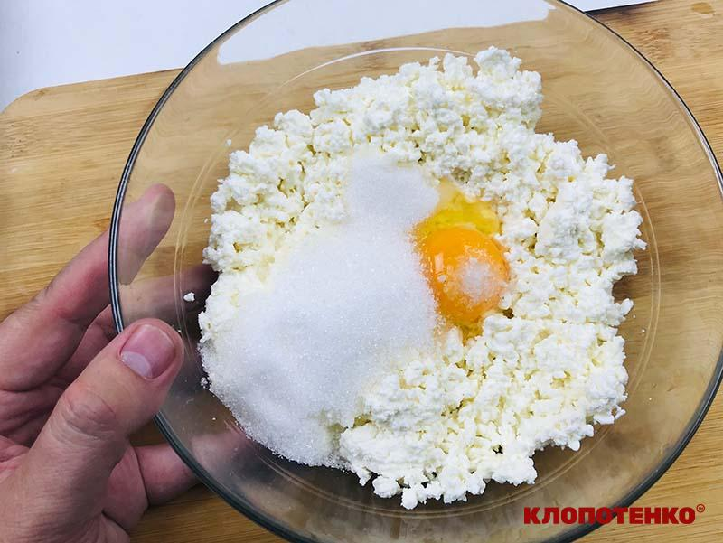
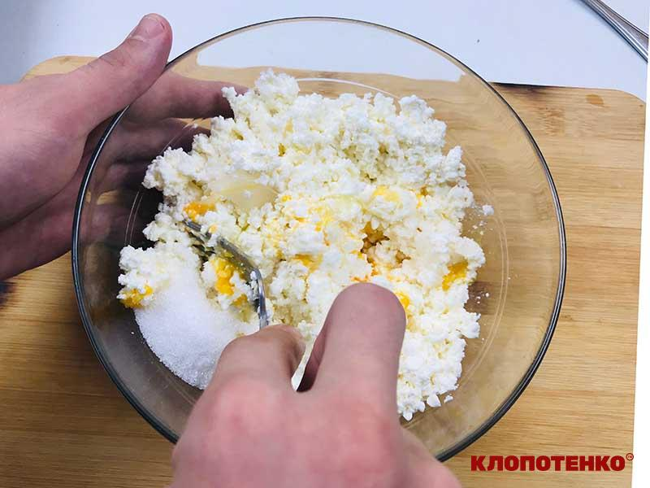

Нічого собі! Бо здавалось би, така проста страва – сирники, але дуже часто не виходить. То розтечуться по пательні, то скоринка злізе, як перегортаєш на інший бік, то ніби й красивими вийшли, а всередині сирі. Але в мене для вас дуже хороші новини, бо я хочу поділитись з вами рецептом сирників, які завжди виходять. В чому секрет, спитаєте ви? Просто треба врахувати декілька деталей.
Який кисломолочний сир обрати
Для приготування сирників нам потрібен жирний кисломолочний сир – від 9%, можете брати фермерський, домашній та навіть безлактозний. Сир має бути не занадто вологим, тож якщо ви купили такий, в якому багато рідини, радимо відкинути його на друшляк з марлею, та трохи відтиснути. Обирайте однорідний, мʼякий сир. За моїм досвідом сирники з твердого зернистого сиру не завжди виходять такими смачними, бо в структурі дуже відчуваються цілі зерна. Крім того, такі сирники не дуже зручно формувати, бо іноді вони розсипаються і доводиться додавати більше борошна. А це значить, що вони вже не будуть такими ніжними. Щоб сирники мали гарну структуру і вийшли смачними, необхідно ретельно перемішати сирну масу, щоб вона була більш-менш однорідною. Це можна робити виделкою, а ще краще за допомогою товкачки.
Що додати до сирників
Класичні сирники смачні самі по собі, але щоб вони швидко не набридли ви можете урізноманітнити їх різними добавками — як то мак, родзинки, подрібнена курага, кокосова стружка або манка для більш пружної структури. Головне, що ви маєте пам’ятати — таких добавок не має бути багато. на таку порцію вам знадобиться 1-2 ст. л. маку, манки чи кокосової стружки, 30 г родзинок або подрібненої кураги.
Чому сирники пригорають
Дуже часто доводиться чути, що сирники пригорають. Це дуже неприємно, погодьтесь. Тому є декілька причин — найголовніша з яких використання великої кількості цукру, який починає дуже швидко карамелізуватись і горіти. Ті хто намагався приготувати карамель з цукру, зрозуміють про що йдеться. В нашому рецепті цукру небагато, ви навіть можете ще його трохи зменшити. Натомість ви можете подати готові сирники з солодким варенням, медом, згущеним молоком, чи просто посипавши їх цукровою пудрою. Ще однією з причин пригорання може бути банальний перегрів сковорідки, тому смажити сирники краще на середньому вогні.
Як заморозити сирники
Сирники на сніданок — це чудово, але кожен день замісити тісто, а до цього ще купувати смачний сир для них вийде не в кожного. На щастя, сирники дуже добре піддаються замороженню, тож якщо ви хочете ласувати ними досить часто скористайтесь цією порадою. Збільште кількість всіх інгредієнтів у 2 чи більше разів, в залежності від того, скільки ви хочете зробити заготівель і наскільки вам дозволить обʼєм морозильної камери. Після того як ви виконаєте всі кроки й дійдете до обкатування сирників в борошні, викладіть їх на одну чи декілька кухонних дощок, рівномірно присипаних ним, або застелених вощеним пергаментом і відправте до верхньої камери морозилки — там зазвичай найнижча температура. Через декілька годин, коли вони повністю застигнуть, дістаньте їх і перекладіть до поліетиленового пакета з застібкою. Якщо сирники трохи прилипли до дошки зачекайте декілька хвилин, щоб верхній шар трохи розтанув. Щоб заморожені сирники смакували так само як свіжі, рекомендую тримати їх в морозилці не більше двох тижнів. Перед смаженням рекомендую дати їм трохи відтанути, буквально 10 хвилин. Після чого їх можна смажити звичайним способом.
Як приготувати сирники
Інгрідієнти
- 400-500 г кисломолочного сиру 9%
- 1 яйце
- 3 ст. л. цукру
- 10 г ванільного цукру
- дрібка солі
- 3 ст. л. (або 100 г) борошна з великою гіркою (+додатково для панірування
- 3-4 ст. л. соняшникової олії для смаження
Сирники: покроковий рецепт
-
Крок
Приготуйте тісто на сирники. Змішайте в мисці 400 г кисломолочного сиру, яйце, 3 ст. л. цукру, 10 г ванільного цукру та дрібку солі для балансу смаку.

-
Крок
Приготуйте тісто на сирники. Змішайте в мисці 400 г кисломолочного сиру, яйце, 3 ст. л. цукру, 10 г ванільного цукру та дрібку солі для балансу смаку.

- ...